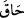
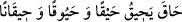
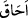
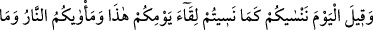
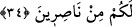
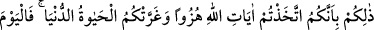
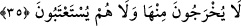

cezası yine kötülüktür. Ceza, sebebinin ismiyle isimlendirilmiştir.
Ebû Hayyân şöyle demiştir: Bu “
” kelimesi yalnız nahoş şeylerde kullanılır. “
” denilir. “Onu kuşattı” demektir. “
” gibidir. “Hayk”, “kişinin
kötü işinin insanı kaplaması”dır.
34. Denilir ki: Bu güne kavuşacağınızı unuttuğunuz gibi biz de bugün sizi
unuturuz. Yeriniz ateştir, yardımcılarınız da yoktur!
“Ve” hak tarafından kendilerine şöyle “denildi: “Siz, bu gününüzle”, kıyâmet günüyle
“karşılaşmayı”, îmân ve amel-i sâlih ile o güne hazırlanmayı terk ederek dünyada
“nasıl unuttunuzsa biz de bugün sizi unuttuk”, unutulanın terk edilmesi gibi sizi azapta
terk ettik. “Yeriniz ateştir”, cehennem ateşidir. Sizi bu cehennemden kurtaracak “Hiçbir
yardımcınız da yoktur!”
Burada hitap zamirinde “istiârey-i mekniyye” vardır. Onları azapta terk etme ve
onlara aldırmama da, unutulan işe benzetilmiştir. Karinesi ise nisyan yâni unutmadır.
“Likâ” kelimesinin “yevm” kelimesine muzâf olması, mastarın zarfına muzâf olması
kabilindendir. Yâni “siz Allah’a kavuşmayı ve onun bu günde sizi cezalandıracağını
unuttunuz” demektir. “Yevm”, mefûlubih mecrasına getirilimiştir. “Yevm”, “kavuşulan
şey” sayılmıştır. Bu kavl-i ilâhî şuna işâret etmektedir: “Bunlar dünya tarlasına nisyan
tohumu ektiler, bu tohum âhirette nisyan meyvesi verdi.”
Kötülük ediyorsan iyilik bekleme,
Ilgın ağacı asla üzüm meyvesi vermez.
Zakkum ağacını canla beslesen de,
Ondan meyve yiyeceğini zannetme.
Zehirli ağu ağacı hurma vermez,
Hangi ağacın tohumunu ektiysen onun meyvesini bekle.
Sizin merci ve mekanınız cehennemdir. Zira cehennem bizi unutanların, cennet de bizi
hatırlayanların yeridir. Sizden hiç birinizin sizi cehennemden kurtaracak tek bir
yardımcısı yoktur.